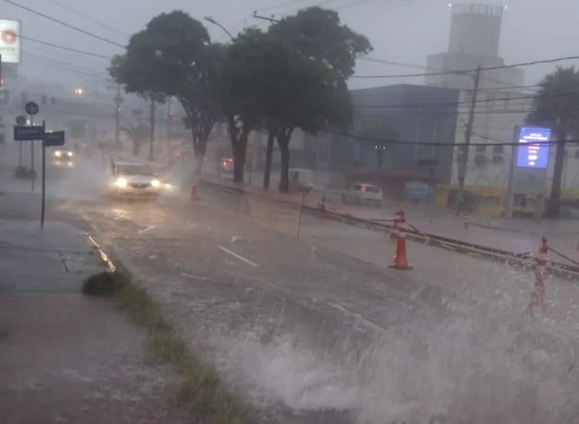

Rafael Mendes • Morador (Pina / Boa Viagem)
Fixado pela Comunidade
Confirmado • 128 relatos
Chuva torrencial e água subindo na Av. Herculano Bandeira / Domingos Ferreira
A chuva apertou de vez nos últimos 40 minutos com rajadas de vento e visibilidade baixa. A pista já acumula água nos trechos mais baixos da avenida e o trânsito começou a travar. Fixamos este relato porque dezenas de moradores confirmaram a mesma situação na região.

Guia rápido: como enviar um bom relato
- Local e referência: cite o bairro, rua ou avenida e o ponto de referência.
- Horário e intensidade: informe se está garoando, chovendo forte, ventando ou alagando.
- Foto com segurança: registre sem se expor a fios caídos, enxurradas ou áreas de risco (emergências: Defesa Civil 199 / Bombeiros 193).